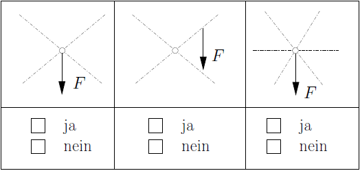
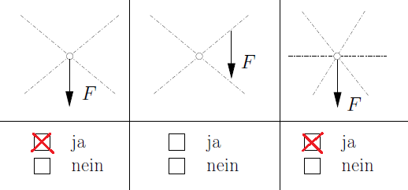
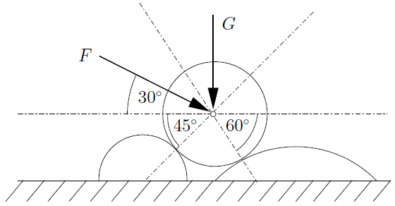
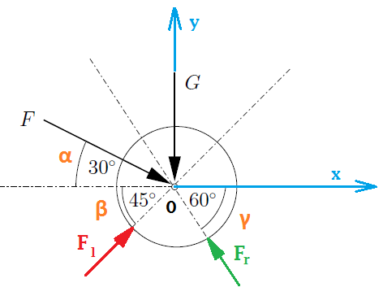
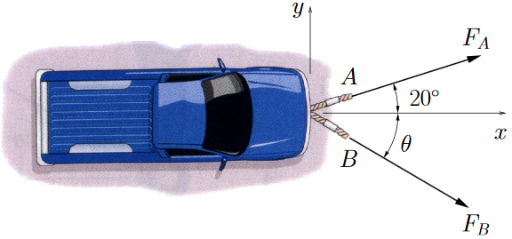
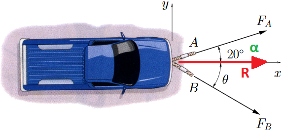

Aufgabe 1.1

Da die Wirkungslinien der Kräfte sich in einem Punkt schneiden, kann \( \vec F \) eindeutig in Einzelkräfte zerlegt werden.Aufgabe 1.2
Gegeben:
Gesucht:

\( \vec G = \begin{bmatrix} G_x \\ G_y \end{bmatrix} = \begin{bmatrix} 0 \\ -G \end{bmatrix} \)
\( \vec F = \begin{bmatrix} F_x \\ F_y \end{bmatrix} = F \cdot \begin{bmatrix} cos(\alpha) \\ -sin(\alpha) \end{bmatrix} \)
\( \vec F_l = \begin{bmatrix} F_{lx} \\ F_{ly} \end{bmatrix} = F_{l} \cdot \begin{bmatrix} cos(\beta) \\ sin(\beta) \end{bmatrix} \)
\( \vec F_r = \begin{bmatrix} F_{rx} \\ F_{ry} \end{bmatrix} = F_{r} \cdot \begin{bmatrix} -cos(\gamma) \\ sin(\gamma) \end{bmatrix} \)
Die Kraftvektoren \( \vec G \) und \( \vec F \) können zu der Resultierenden \( \vec R \) zusammengefasst werden:\( \vec R = \vec G + \vec F \)
\( \vec R = \begin{bmatrix} R_{x} \\ R_{y} \end{bmatrix} = \begin{bmatrix} 0 \\ -G \end{bmatrix} + F \cdot \begin{bmatrix} cos(\alpha) \\ -sin(\alpha) \end{bmatrix} = \begin{bmatrix} F \cdot cos(\alpha) \\ -G - F\cdot sin(\alpha) \end{bmatrix} \) (1)
Die Walze wird von den Kräften \( \vec F_{l} \) und \( \vec F_r \) aus der Führung angegriffen. Da alle Wirkungslinien der Kräfte sich in einem (gemeinsamen) Punkt schneiden, kann die Resultierende \( \vec R \) auch in die zwei Kräfte \( \vec F_{l} \) und \( \vec F_r \) zerlegt werden. Es gilt:\( \vec R = \vec F_{l} + \vec F_r \)
\( \vec R = \begin{bmatrix} R_{x} \\ R_{y} \end{bmatrix} = \begin{bmatrix} F_l \cdot cos(\beta) - F_r \cdot cos(\gamma) \\ F_l \cdot sin(\beta) - F_r \cdot sin(\gamma) \end{bmatrix} \) (2)
Von der Gleichung (1) und (2) erhält man das Gleichungssystem:I. \( R_x = F \cdot cos(\alpha) = F_l \cdot cos(\beta) - F_r \cdot cos(\gamma) \)
II. \( R_y = -G - F \cdot sin(\alpha) = F_l \cdot sin(\beta) - F_r \cdot sin(\gamma) \)
bzw.I. \( F \cdot cos(\alpha) = F_l \cdot cos(\beta) - F_r \cdot cos(\gamma) \)
II. \( -G - F \cdot sin(\alpha) = F_l \cdot sin(\beta) - F_r \cdot sin(\gamma) \)
Man löst die Gleichung I. nach \( F_r \) auf und erhält:$$ F_r = \frac{F_l \cdot cos(\beta) - F \cdot cos(\alpha)}{cos(\gamma)} $$
Man setzt die obige Formel für \( F_r \) in Gleichung II. ein und löst nach \( F_l \) auf:$$ F_l = -\left( \frac{F \cdot \left( sin(\alpha) - \frac{sin(\gamma)}{cos(\gamma)} \cdot cos(\alpha) \right) + G}{sin(\beta) + \frac{sin(\gamma)}{cos(\gamma)} \cdot cos(\beta)} \right) $$
Man merkt anhand des Minuszeichens von \( F_l \), dass es negativ ist. Der Grund ist, dass wir in unserer Freischnittskizze die Richtung von \( F_l \) nach oben rechts gewählt haben. In der Wirklichkeit zeigt \( F_l \) nach links unten auf die linke Führung, also in entgegengesetzte Richtung. Der Betrag \( | F_l | \) bleibt immer gleich:$$ |F_l| = +\left( \frac{F \cdot \left( sin(\alpha) - \frac{sin(\gamma)}{cos(\gamma)} \cdot cos(\alpha) \right) + G}{sin(\beta) + \frac{sin(\gamma)}{cos(\gamma)} \cdot cos(\beta)} \right) $$
Dasselbe gilt auch für \( F_r \). Somit zeigt \( F_r \) in wirklichkeit nach rechts unten auf die rechte Führung. Es gilt:$$ F_r = -\left( F \cdot \frac{cos(\alpha)}{cos(\gamma)} + |F_l| \cdot \frac{cos(\beta)}{cos(\gamma)} \right) $$
Und der Betrag \( |F_r| \) ist:$$ |F_r| = +\left( F \cdot \frac{cos(\alpha)}{cos(\gamma)} + |F_l| \cdot \frac{cos(\beta)}{cos(\gamma)} \right) $$
Aufgabe 1.3
Ein Pickup-Wagen soll mithilfe zweier Seile in Richtung der x-Achse gezogen werden (siehe Bild). Dazu ist eine resultierende Kraft von \( 950\, N\) in axialer Richtung erforderlich. Gegeben:
Gesucht:

Die zusammenhängenden Kraftvektoren sind:\( \vec R = \begin{bmatrix} R_x \\ R_y \end{bmatrix} = \begin{bmatrix} R_x \\ 0 \end{bmatrix} \)
\( \vec F_A = \begin{bmatrix} F_{Ax} \\ F_{Ay} \end{bmatrix} = F_A \cdot \begin{bmatrix} cos(\alpha) \\ sin(\alpha) \end{bmatrix} \)
\( \vec F_B = \begin{bmatrix} F_{Bx} \\ F_{By} \end{bmatrix} = F_B \cdot \begin{bmatrix} cos(\theta) \\ -sin(\theta) \end{bmatrix} \)
Für die Resultierende \( R \) gilt: $$ \vec R = \vec F_A + \vec F_B $$ und $$ R = |\vec R| = \sqrt{{R_x}^2 + {R_y}^2} = \sqrt{{R_x}^2 + 0} = R_x $$ und damit $$ R_x = R = 950\, N $$ Aus \( \vec R = \vec F_A + \vec F_B \) gibt es zwei Gleichungen: $$ \begin{array}{ll} I.\;\; R_x & = F_A \cdot cos(\alpha) + F_B \cdot cos(\theta) \\ II.\; 0 & = F_A \cdot sin(\alpha) + F_B \cdot cos(\theta) \\ \end{array} $$ Aus Gleichung \( II. \) folgt: $$ F_A = F_B \cdot \frac{sin(\theta)}{sin(\alpha)} \;\;\;\;\;\;\;\;\;\;\;\;\;\; (*)$$ Setzt man \( F_A \) aus \( (*) \) in Gleichung \( I. \) ein, bekommt man: $$ R_x = F_B \cdot \left( \frac{cos(\alpha)}{sin(\alpha)}\cdot sin(\theta) + cos(\theta) \right) $$ und somit: $$ F_B = \frac{R_x}{\frac{cos(\alpha)}{sin(\alpha)}\cdot sin(\theta) + cos(\theta) } = \frac{R}{\frac{cos(\alpha)}{sin(\alpha)}\cdot sin(\theta) + cos(\theta) } $$ Setzt man die Werte z.B. \( R_x = R = 950\,N \), \(\alpha = 20° \) und \( \theta = 50° \) ein, bekommt man: $$ F_B = 354,8\, N $$ \( \blacksquare \)